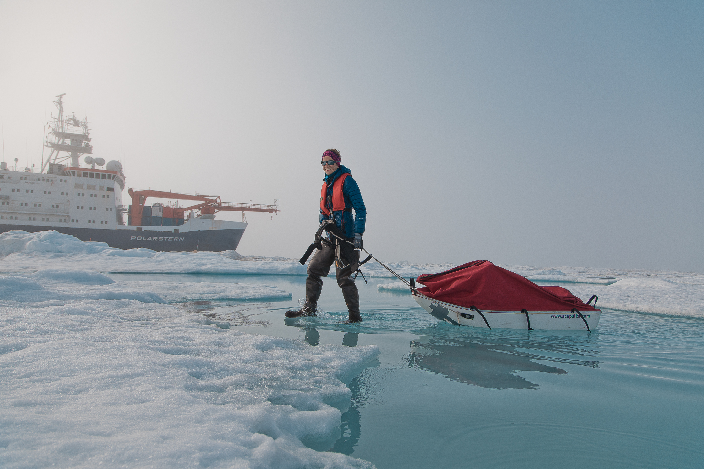
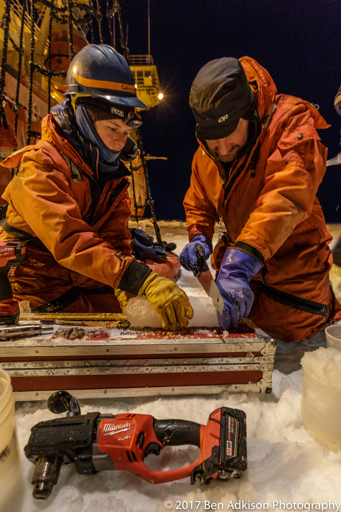

About me
I am currently postdoctoral scholar at the Polar Science Center at the University of Washington in Seattle, and will be starting as an Assistant Science in the Applied Ocean Physics & Engineering department at Woods Hole Oceanographic Institution in September 2022. I received my PhD in Civil & Environmental Engineering from the University of Washington. I first dreamt of exploring the polar oceans while learning about Fridtjof Nansen’s transpolar drift while studying for my B.A. in Earth & Oceanographic Science at Bowdoin College in Maine. My research now combines observations taken in the Arctic and Antarctic with modeling approaches to better understand the interactions of sea ice with the ocean, and the implications in climate models. I have participated extensively in fieldwork in both hemispheres, including the MOSAiC Expedition in 2020.


Ph.D., Civil & Environmental Engineering, University of Washington, 2019
University of Washington, Seattle, Washington
Advisor: Jim Thomson
Bowdoin College, Brunswick, Maine
Research
Waves in sea ice
Surface waves are becoming an increasingly important part of the Arctic with declining sea ice extent and growing fetch. As part of the Office of Naval Research’s Sea State DRI, I used observations to investigate ways in which waves in sea ice impact the autumn ice formation and upper-ocean processes. Further work to explore the specific role of waves in landfast sea ice (ice grounded on the Alaskan coast) and coastal erosion seeks to use novel ways of observing waves in ice with seafloor cables.
Related publications: Smith & Thomson (2016), Smith & Thomson (2019)
Sea ice physics
In the rapidly changing Arctic Ocean, the physical and optical properties are also evolving and have a role in future changes to sea ice cover. During the 2020 MOSAiC campaign, I collected an extensive dataset of temporal and spatial evolution of sea ice spectral and broadband albedo with collocated physical properties. These data are being using in ongoing work to better understand the details of the sea ice-ice albedo feedback.
Related publications: Smith et al., GRL (2022), Light et al., in review, MOSAiC broadband albedos, MOSAiC spectral albedos, MOSAiC albedo photos

Temperature profiles before and after a significant wave event in the Arctic Ocean (from Smith et al., 2018)
Arctic Oceanography
Fine-scale water column structure, freshwater column, heat distribution.
Related publications: Smith, et al., (2018)
Sea ice model sensitivity
Targeted improvement of sea ice and climate models to best project future changes in climate requires identification of the most essential parameters for development. Sea ice sensitivity studies are used to determine parameters of key importance for the Arctic climate. Integrating modeling efforts with observational campaigns then allows us to make observations targeting these essential parameters.
Related publications: Smith, Holland, & Light (2022)
Selected Publications
Smith, M., Holland, M., & Light, B. (2022). Arctic sea ice sensitivity to lateral melting representation in a coupled climate model. The Cryosphere, 16(2), 419-434.
Smith, M., Stammerjohn, S., Persson, O., Rainville, L., Liu, G., Perrie, W., ... & Thomson, J. (2018). Episodic reversal of autumn ice advance caused by release of ocean heat in the Beaufort Sea. Journal of Geophysical Research: Oceans, 123(5), 3164-3185.
Smith, M., & Thomson, J. (2016). Scaling observations of surface waves in the Beaufort Sea. Elem Sci Anth, 4.
Full publication list can be found on Google Scholar
Outreach
The following videos show a selection of public presentations that I have given as part of outreach efforts.
National Ocean Sciences Bowl (NOSB) Webinar w/ Dr. Bonnie Light (2021)
Camden Conference Talk (2021)
NASA GISS Sea Level Rise Seminar (2021)
Engage Science presentation at Town Hall Seattle (2017)
In my free time, I enjoy a hodgepodge of different outdoor activities and kitchen projects.